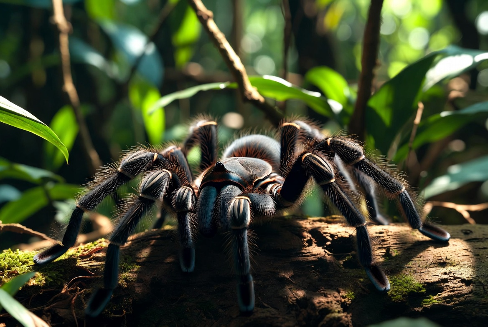

Tarantula · Theraphosidae
A complete, fact-checked printable manual: why the enclosure is low and wide, substrate depth, the fasting that isn't a problem, the dehydration that is, and molting from start to finish.

Contents
Every page is written to be used, not just read once.
Getting Started
Section 01 · Quick Profile
Section 02 · Full Care Guide
Section 03 · Health & Common Issues
Section 04 · Quick Reference
Section 05 · Owner Tools
Reference
Start here
Three ways to get value from it, depending on where you are right now.
Read pages 4 through 9 in order. Tarantula setups are refreshingly simple compared to most exotic pets, no complex lighting, no elaborate temperature gradients, but the two details that matter, enclosure shape and substrate depth, matter a great deal and are awkward to change later. Then use the Budget & Shopping List on page 16.
Jump to the Setup Checklist and Environment Targets on page 14 to audit what you have. If your tarantula has stopped eating, go to page 8 before you worry: in this species a long fast is usually normal. If the abdomen looks shrunken or the legs are curling underneath, go to page 11 instead, because that one is urgent.
Why this package exists
Tarantula keeping runs on hobby consensus more than on published research, and where the research does exist, it is often quoted selectively. Page 9 gives you the one controlled housing study in full, including the results that do not support the conclusion people usually draw from it. Where sources genuinely disagree, this package says so rather than picking a number and pretending.
The vet problem, stated up front
Veterinary care for tarantulas is genuinely limited, and many areas have no vet who treats invertebrates at all. That reshapes everything: prevention through correct husbandry does most of the work here, and knowing what is normal versus what is actually wrong matters more than knowing what to do once it has gone wrong.
Section 01
Everything at a glance. Figures lean toward the commonly kept New World terrestrial species.
| Family | Theraphosidae. Over 900 species on every continent except Antarctica |
| Adult size | 2 to 12 in leg span depending on species |
| Captive lifespan | Females 15 to 20+ years; males typically 4 to 7 |
| Native range | Tropics and subtropics; desert, grassland, rainforest, and canopy by species |
| Diet type | Carnivore, live insect prey only. No formulated diet exists |
| Enclosure minimum (adult terrestrial) | About 20 × 10 × 10 in, roughly 3× the leg span, under 12 in tall |
| Social needs | Solitary and cannibalistic. House singly, at any enclosure size |
| Handling | Look, don't touch. A fall can be fatal and urticating hairs can injure you |
| Conservation status | Varies by species; many listed in CITES Appendix II, some Endangered |
$70 to $300 before the spider. A beginner species runs $25 to $100, and a Chilean rose hair or curly hair typically $20 to $50. Spiderlings cost less than adults.
$5 to $15 a month for feeder insects, or roughly $60 to $180 a year. There is no pet insurance for tarantulas and very little routine vet cost to budget for.
The cheapest long commitment in the hobby
A female can live 15 to 20 years or more on a food budget of about $10 a month. Set against most exotic pets that is remarkable value, but it is a genuine two-decade commitment, so buy the species you actually want rather than the one that is in the shop.
Section 02 · Full Care Guide
Most commonly kept pet tarantulas are terrestrial, and the enclosure should be horizontal, wider than it is tall, specifically to limit fall risk. Everything about terrestrial tarantula enclosure design comes back to not letting the spider fall. A reasonable adult minimum is around 20 by 10 by 10 inches, roughly a 10-gallon tank, sized to about three times the leg span, with overall height kept under about 12 inches.
Never use a mesh lid
A tarantula's feet can catch in mesh and tear, which is a real and avoidable injury. Acrylic with drilled ventilation holes gives you a secure lid without the hazard.
At least 3 inches, filling roughly half to two-thirds of the enclosure. Coconut fiber, peat, or organic pesticide-free soil all hold moisture appropriately and hold a burrow shape without collapsing. Never sand. Depth is species-dependent: an obligate burrower needs far more than a terrestrial species that mostly sits under a piece of bark, and an arboreal species needs height and a vertical retreat instead. Get the species right before you buy the enclosure.
Section 02 · Full Care Guide
| Condition | Target |
|---|---|
| Temperature | Room temperature, roughly 70 to 80°F |
| Supplemental heat | Not needed in most homes |
| Heat mat, if the room runs cold | Mounted on the side, never the bottom, on a thermostat |
| Humidity, dry-adapted species | Commonly cited as 40 to 60% |
| Humidity, clinical sources | Sometimes cited as 65 to 75% |
| Lighting | None required. Avoid bright light and direct sun |
| Water dish | Shallow, kept full, changed daily, for every species |
The humidity numbers genuinely disagree, and it matters less than it looks
Some care guides recommend a moderate 40 to 60% for commonly kept dry-adapted species. Others, often written from a clinical or exotic-vet perspective, suggest 65 to 75%. Rather than chasing either number with a spray bottle, the consistent approach is a reliable water dish plus lightly moistened substrate. Overflowing the dish to dampen one corner is how most keepers manage humidity, and it is more stable than misting.
Heavy misting raises mold risk without a clear benefit, and mold and mites are both husbandry problems rather than illnesses: they follow poor ventilation and enclosure sanitation, and they resolve when those are corrected. Cross-ventilation through drilled holes on more than one face keeps air moving without drying the substrate out. If you can smell the enclosure, or see fuzz on leftover prey, ventilation is the thing to fix first.
A mat under the enclosure heats the substrate the tarantula burrows into to escape heat, which is exactly backwards. Mounted on one side wall, it creates a gradient the spider can move away from. Run it through a thermostat regardless, and in most homes skip it entirely: this is a room-temperature animal.
What to actually watch
Judge the setup on substrate condition, ventilation, and whether the water dish is full, not on how the spider looks or how much it moves. A still tarantula tells you nothing about your husbandry, which is exactly why the physical checks carry the weight here.
Section 02 · Full Care Guide
If you are hoping for a pet you can hold, a tarantula is the wrong choice, and that is worth knowing before you buy one rather than after. The risk runs in both directions.
A fall from your hand, your shoulder, or a couch cushion can rupture a tarantula's abdomen, and that is often fatal. Even a short fall, the kind that would not concern you for a moment with any other pet, can be catastrophic here. There is no margin for error, and it is the reason enclosures for this species are built low and wide in the first place.
New World species defend themselves by flicking urticating hairs, tiny barbed hairs that cause skin, respiratory, and eye irritation on contact. Bites are uncommon and rarely medically serious, roughly comparable to a hornet sting, but the real problem with a bite is what happens next: a reflexive jerk or drop, which brings you straight back to the fall risk and often kills the spider that was only defending itself.
Urticating hairs deserve real respect
If they get into your eye the injury can be serious, penetrating deep enough to cause corneal damage and, in serious cases, complications requiring an ophthalmologist. This is the more common real-world injury from tarantula keeping, not bites. Wash your hands after any enclosure work and keep them away from your face until you have.
Rearing up on the hind legs, flicking hairs toward a perceived threat, and displaying the fangs are all defensive signals. None of them mean the spider is aggressive in the way that word implies with a mammal. They are responses from an animal that would much rather be left alone, and the correct answer to all of them is to back off and close the lid.
Never during a molt
A molting tarantula has a fragile new exoskeleton for weeks afterward. Do not handle, disturb, or feed during this period. This is one of the few absolute rules in tarantula keeping, and page 12 covers what a normal molt looks like from start to finish.
Section 02 · Full Care Guide
This is the one pet on the site where skipping meals is genuinely normal rather than a red flag. Prey should never be larger than the tarantula's own abdomen, and any uneaten prey comes out within 24 hours.
| Life stage | Frequency | Notes |
|---|---|---|
| Sling (under about 2 in) | Every 2 to 3 days | Pinhead crickets, fruit flies, or prey no larger than its own abdomen |
| Juvenile (about 2 to 4 in) | Every 4 to 14 days | Sources disagree most here. Adjust on abdomen size and appetite, not a calendar |
| Subadult and adult | Every 1 to 2 weeks | Strongly species-dependent. A rose hair may need 4 or 5 crickets a month |
| Mature adult male | Often little or nothing | Many eat markedly less or stop after the final molt. A natural end-of-life pattern |
Live insect prey, with no formulated diet to fall back on. Crickets are the default. Dubia or discoid roaches are a good alternative, more nutrient-dense and slower to digest. Mealworms and superworms are supplemental, and crushing the head first on larger roaches and superworms stops them biting. Waxworms occasionally, since they are fatty. The largest species can take a pinky mouse but do not need one.
Gut-load feeders for a day or two before offering so the nutrition actually transfers. Skip calcium and vitamin dusting entirely: that is a reptile practice, and hobby consensus is against it here, with anecdotal reports linking it to bad molts. One source notes there is no strong evidence of harm, so treat it as a precaution rather than a proven fact, but the guidance across care sites is consistent.
Never feed
Wild-caught insects of any kind, because the pesticide and parasite risk is not worth it. Fireflies specifically are a hard no across tarantula-keeping resources; the strongest documented toxicity data is for reptiles rather than tarantulas directly, but the precaution is consistent enough to take seriously. Skip processed human food entirely. And never leave live prey in with a spider approaching a molt: crickets will chew on a soft tarantula, and that is a real killer.
Premolt fasting is by far the most common reason: a darkening, plumping abdomen and reduced activity precede a molt, and it can last weeks in a sling or several months in an adult. Post-molt recovery accounts for another stretch, 3 to 7 days for slings and juveniles, 7 to 14 for adults. Then mature male mating drive, a recent rehoming or an off husbandry detail, species-specific fasting tendency (rose hairs are notorious), and simple prey pickiness. Only the last item on the list, appetite loss paired with not drinking, visible injury, uncoordinated legs, or a curled posture, points to a real problem.
Section 02 · Full Care Guide
The one controlled housing study, told straight
Stalter and colleagues, in PLoS ONE in 2024, compared Standard against Complex housing for Brazilian black tarantulas, Complex being roughly six times larger with six times as many structural elements. Activity did not change, and inactivity accounted for nearly all observed behavior in both. Space use did change: home ranges were 77% larger and core areas 113% larger. Boldness changed: 150% greater odds of being active in a novel environment afterward. And offered both at once, the spiders showed no clear preference. The authors' own conclusion is cautious, and a guide quoting only the flattering results is not telling you the truth.
Matched to the species. Nothing in that study displaces this, and it is where the real welfare failures happen.
Cork bark laid down as a starter burrow, or mounted vertically for an arboreal species. Let the spider rearrange substrate and web up the entrance. That is the closest thing to construction this animal does.
The 77% space-use result is real, so go larger where you sensibly can. Two limits: never add fall height, and a very large enclosure makes a small spider hard to find and hard to feed.
A shallow dish kept full, for every species including arid ones. Chronic dehydration kills more captive tarantulas than anything else on this page, and it is entirely preventable.
Managed through the dish and lightly damp substrate rather than through misting, which trades a humidity problem for a mold problem.
Cork flats, leaf litter, a low branch, sphagnum moss, anchored so nothing can shift onto the animal. Low, always, for a terrestrial species.
Section 03 · Health & Common Issues
What is actually wrong, and what only looks like it.
Act now if you see
A shrunken, wrinkled, raisin-like abdomen · legs curling tightly underneath the body, the "death curl" · hemolymph leaking from any injury · an inability to lift the body off the ground · uncoordinated or jerky leg movement · a molt that has stalled part way · white material around the mouthparts
Do not act on any of these
Sitting motionless for days. Refusing food for weeks. Sealing itself into its burrow. Turning dull and dark before a molt. Lying on its back with the legs in the air, which is a tarantula molting, not a tarantula dying. All of these are normal, and reacting to them is how keepers cause the problems they were trying to prevent.
Veterinary care for invertebrates is genuinely rare, and many areas have no one who treats them. There is also no pet insurance for tarantulas and no routine wellness exam to build a baseline. What you have instead is the enclosure itself, which is why almost every entry in this section resolves back to substrate, ventilation, water, and not disturbing a molt. Get those right and the list of things that can go wrong shortens dramatically.
| Normal | Concerning |
|---|---|
| A plump, dark abdomen with a bald patch, plus refusing food | A shrunken, wrinkled abdomen with refusing food |
| Lying on its back, legs up, for hours during a molt | Legs curled tightly underneath while upright |
| Webbing over the burrow entrance and disappearing for weeks | Sitting exposed in the open, unmoving, with a shriveled abdomen |
| Kicking hairs at you and leaving a bald patch on the abdomen | Any visible fluid leaking from the abdomen or a leg joint |
| An adult male eating almost nothing after his final molt | A juvenile refusing food 6 to 8 weeks with visible weight loss |
Section 03 · Health & Common Issues
This is the emergency, not the fasting
A shrunken, shriveled, raisin-like abdomen paired with uncoordinated legs or an inability to lift the body off the ground can be fatal within days. When a tarantula stops eating, check water access and humidity first, then look at the abdomen: shriveled means urgent, plump and dark almost certainly means premolt.
Cause: an empty or fouled water dish, substrate that has dried out completely, or excessive ventilation in a dry room. It is the most common issue keepers run into, and it is almost always an omission rather than an accident. Signs: a wrinkled, shrunken abdomen, lethargy, and the death curl, where the legs pull in tightly underneath an upright body. Response: immediate access to a shallow water dish, and correcting the substrate moisture. Mild dehydration often resolves quickly once conditions are corrected. Prevention: a dish kept full and changed daily, for every species including arid ones.
The ICU cup, if it is already advanced
Keepers dealing with an advanced case often use a small container with damp paper towel or moss and a shallow water source, keeping the spider in high humidity with easy access to water while it recovers. It is a hobby technique rather than a veterinary protocol, so treat it as a last resort when no invertebrate vet is reachable, and fix the enclosure conditions in parallel.
The abdomen is your gauge for almost everything in this package. A healthy one is plump and rounded, roughly the size of the carapace or a little larger. A dark, tight, shiny abdomen with a bald patch means a molt is coming. A wrinkled, deflated one means dehydration or a long fast that has gone too far. Learning what your particular tarantula's normal looks like, and photographing it monthly, gives you the baseline that makes the difference obvious later.
Do not confuse a bald patch with a problem
New World species flick urticating hairs from the abdomen when threatened, which leaves a bare, often darker patch. That is a record of past defensive behavior, not an injury or a skin condition, and the hairs come back with the next molt.
Section 03 · Health & Common Issues
Molting is the single most important process to understand in tarantula keeping, because most of what looks alarming in this species is a molt, and most of what actually goes wrong happens because someone interfered with one.
| Stage | What you see | What to do |
|---|---|---|
| Premolt | Refusing food, a darkening and plumping abdomen, a bald patch going shiny and black, reduced activity, heavy webbing | Stop offering food. Keep the water dish full. Leave it alone |
| The molt | The spider flips onto its back, legs in the air, often for hours | Nothing at all. Do not touch, do not flip it back, do not open the lid |
| Just after | Pale, soft, and visibly larger. Fangs are white rather than dark | No food, no handling, no disturbance. Water stays available |
| Hardening | Color returning, fangs darkening | Wait 3 to 7 days for slings and juveniles, 7 to 14 for adults, before feeding |
A tarantula on its back is molting, not dying
This is the single most common panic in the hobby, and intervening is what turns a normal molt into a fatal one. A dying tarantula curls its legs tightly underneath itself while upright. A molting tarantula lies on its back with its legs extended. Those two postures are opposites, and telling them apart is one of the most useful things in this book.
Cause: insufficient humidity, or disturbance during the process. Signs: a molt that stalls part way, with the old exoskeleton still attached to legs or abdomen for an extended period. Response: a stuck molt can be fatal, and there is no reliable home fix, which is exactly why prevention carries all the weight here: proper humidity going in, and no disturbance and no feeding once it starts. Aftermath: a lost leg often regrows over subsequent molts, so a tarantula that comes out of a difficult molt short a limb is not necessarily in trouble.
The molt itself is worth keeping
The shed exoskeleton is a near-perfect cast of the animal, and it is how keepers sex a tarantula without handling it. Log the date on page 19: molt intervals lengthen as a tarantula ages, and a record of them tells you more about your spider's stage of life than its size does.
Section 03 · Health & Common Issues
Cause: most falls happen during attempted handling, and the rest happen in enclosures built taller than they should be. Signs: a ruptured abdomen, or visible hemolymph, the tarantula equivalent of blood, leaking from an injury. Response: a real emergency. Some keepers can stem a minor leak with a small amount of cornstarch applied to the wound, but anything beyond minor bleeding needs specialist attention if you can find it, and the outcome often depends on how fast you act. Prevention: the low, wide enclosure on page 5 and the no-handling position on page 7, which exist for exactly this reason.
Both are husbandry problems rather than illnesses. They follow poor ventilation, leftover prey, and general enclosure sanitation, and improving those resolves most cases. Remove uneaten prey within 24 hours, spot-clean boluses (the small dried pellets left after a meal), and increase cross-ventilation before reaching for anything else.
Signs: white material around the mouthparts alongside decreased appetite. Frequency: rare in captive-bred spiders. Response: treatable by a vet under anesthesia where one is available, which is the practical limit. Buying captive-bred rather than wild-caught is the meaningful prevention.
Signs: a loss of motor coordination, jerky or uncontrolled leg movement, and an inability to right itself. Reality check: poorly understood, often fatal, and with no well-established treatment. Some cases are associated with pesticide exposure, which is a reason to be careful about anything sprayed in the room the enclosure lives in, including household bug spray and flea treatments on other pets.
The pattern across this whole section
Dehydration is prevented by a full water dish. Molt complications are prevented by humidity and being left alone. Falls are prevented by a low enclosure and not handling. Mites and mold are prevented by ventilation and removing prey. In a species with almost no veterinary safety net, that is close to the entire health plan, and all of it is free.
Section 04 · Quick Reference
| Target | Range |
|---|---|
| Temperature | 70 to 80°F, room temperature in most homes |
| Humidity, dry-adapted species | 40 to 60% commonly cited |
| Humidity, clinical sources | 65 to 75% sometimes cited |
| Substrate depth | 3 in minimum, half to two-thirds of the enclosure |
| Enclosure height | Under 12 in |
| Floor footprint | About 3× the leg span |
| Prey size | No larger than the tarantula's abdomen |
| Uneaten prey removed within | 24 hours |
Print & post near the enclosure
Act now if
The abdomen is shrunken and wrinkled · the legs are curled tightly underneath while upright · hemolymph is leaking from anywhere · the spider cannot lift its body off the ground · leg movement is jerky or uncoordinated · a molt has visibly stalled · white material around the mouthparts
Do nothing if
It is on its back with legs extended, which is a molt · it has refused food for weeks with a plump, dark abdomen · it has sealed itself into its burrow · it has a bald patch on the abdomen · it has not moved in days. All of these are normal.
| Reading | Target |
|---|---|
| Temperature | 70 to 80°F |
| Substrate depth | 3 in minimum |
| Enclosure height | Under 12 in |
| Water dish | Full and changed daily, every species |
| Feeding, adult | Every 1 to 2 weeks |
| No feeding after a molt | 3 to 7 days sling or juvenile, 7 to 14 days adult |
| Juvenile fast that warrants a consult | 6 to 8 weeks with visible weight loss |
| Adult fast that is still normal | Weeks to several months in premolt |
The one-question triage
Is the abdomen plump or shrunken? Plump and dark with a fast means premolt: leave it alone. Shrunken and wrinkled with a fast means dehydration: fill the water dish and correct the substrate now. Nearly every scare in this hobby resolves on that single question.
Section 05 · Owner Tools
| Item | Typical cost |
|---|---|
| The tarantula, beginner species | $25 to $100 |
| Chilean rose hair or curly hair specifically | $20 to $50; slings cost less than adults |
| Enclosure | $20 to $80 |
| Substrate | $10 to $30 |
| Hide, decor, and water dish | $20 to $60 |
| Feeding tongs | Small, and worth it |
| Digital thermometer and hygrometer | Small one-time cost |
| Total initial setup, before the spider | $70 to $300 |
| Feeder insects | $5 to $15 a month |
| Estimated annual total | $60 to $180 |
There is no vet budget line here, and that cuts both ways
There is no pet insurance for tarantulas and veterinary care is genuinely rare, so this is not a species where you budget for regular visits. The flip side is that when something does go wrong you may have no professional option at all, which is why the prevention items on this list are not the place to economize.
Where not to cut corners
The enclosure shape and the substrate. A cheap tall enclosure with a mesh lid is the setup that produces the two most preventable deaths in the hobby, and neither is expensive to avoid. Save on decor.
The longevity math
A female commonly lives 15 to 20 years or more, males typically 4 to 7. At roughly $10 a month in feeders, a two-decade animal costs less to run than most pets cost in a single year. Buy the species you actually want.
Section 05 · Owner Tools
A longer window than the other packages, because a tarantula's first months are mostly a waiting game.
Section 05 · Owner Tools
| What you see | Likely meaning | Action |
|---|---|---|
| Shrunken, wrinkled abdomen | Dehydration | Fill the water dish now, fix substrate moisture (page 11) |
| Legs curled tightly underneath, upright | Death curl, usually dehydration | Urgent. Water access immediately (page 11) |
| On its back, legs extended | Molting | Nothing. Do not touch or flip it back (page 12) |
| Refusing food, plump dark abdomen, bald patch | Premolt | Stop offering food, keep water full (page 12) |
| Pale and soft, white fangs | Just molted | No food for 3 to 14 days by stage (page 12) |
| Old skin still attached after a molt | Stuck molt | Do not pull. Specialist help if reachable (page 12) |
| Fluid leaking from abdomen or joint | Rupture or trauma | Emergency. Cornstarch for a minor leak (page 13) |
| Jerky, uncoordinated leg movement | Possible DKS | Check for pesticide exposure in the room (page 13) |
| White material around the mouthparts | Oral nematodes | Vet if one is reachable. Rare (page 13) |
| Fuzz on leftover prey, tiny moving specks | Mold or mites | Improve ventilation, remove prey faster (page 13) |
| Bald patch on the abdomen | Hairs flicked defensively | Normal. Regrows at the next molt (page 11) |
| Rearing up, fangs displayed | Defensive, not aggressive | Back off and close the lid (page 7) |
Section 05 · Owner Tools
| Molt date | Interval since last | Notes (leg span, sex, complications) |
|---|---|---|
| Date | Prey offered | Taken or refused |
|---|---|---|
Section 05 · Owner Tools
What not to do
Don't read stillness as a problem. Inactivity was nearly all of the observed behavior in both conditions of the housing study, and a tarantula sitting motionless for days is just a tarantula. The trap runs the other way too: because a still spider looks the same whether the setup is right or wrong, judge the husbandry on substrate, humidity, ventilation and water, never on how busy the animal looks.
| Date | Change made | How it went |
|---|---|---|
Reference
| Sling | Spiderling: a juvenile tarantula, generally under about 2 inches. |
| Premolt | The weeks or months before a molt: fasting, a darkening plumping abdomen, reduced activity. |
| Death curl | Legs pulled tightly underneath an upright body. Usually dehydration, and urgent. Not the same as lying on the back. |
| Hemolymph | The tarantula equivalent of blood. It flows freely through the body cavity rather than through vessels. |
| Urticating hairs | Barbed abdominal hairs New World species flick defensively. Irritating to skin and genuinely dangerous to eyes. |
| New World / Old World | Americas versus Africa and Asia. New World species have urticating hairs; Old World species do not, and lean on bites. |
| Bolus | The small dried pellet of leftover exoskeleton after a meal, since digestion happens outside the body. |
| Sucking stomach | The muscular organ that pumps liquefied prey into the gut. |
| Carapace | The hard plate covering the front body section. A useful reference for judging abdomen size. |
| Leg span | The standard size measurement, tip to tip diagonally. Enclosure footprint is sized to about 3× it. |
| DKS | Dyskinetic syndrome: a poorly understood loss of motor coordination, often fatal, sometimes linked to pesticide exposure. |
| ICU cup | A hobby technique: a small high-humidity container used to recover a severely dehydrated tarantula. |
Compiled from veterinary, university, and established keeper sources, including the controlled tarantula housing study reported in full on page 9, and cross-checked against current Beastly Facts guides at time of publication. Where sources genuinely disagree, particularly on humidity and juvenile feeding intervals, this package says so rather than choosing one. This is a husbandry reference, not a substitute for an invertebrate-experienced veterinarian where one is available, and is not a live website mirror. No external links or website CTAs appear in this document.
© Beastly Facts · Version 1.0 · September 2026